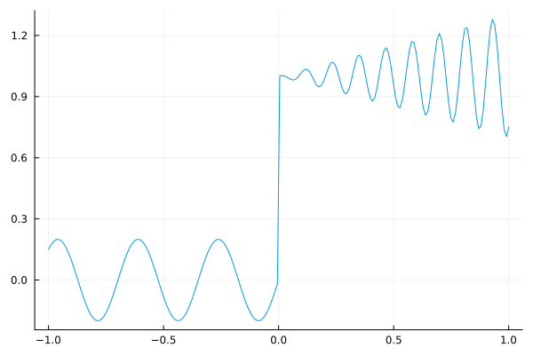
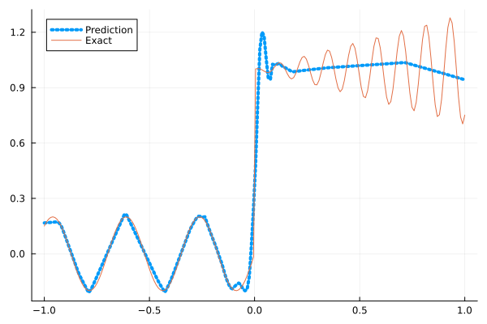
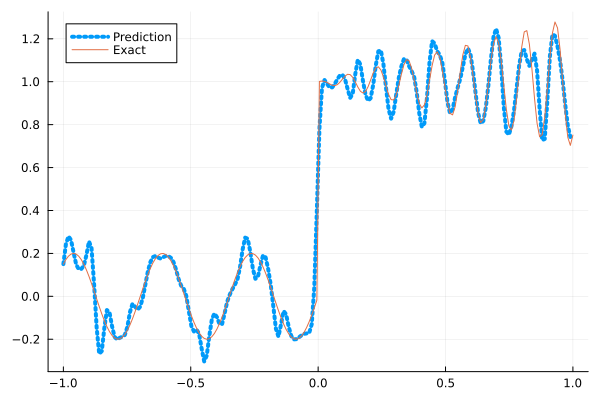
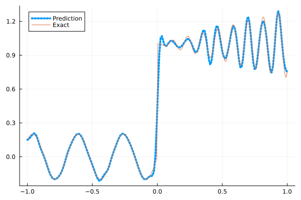
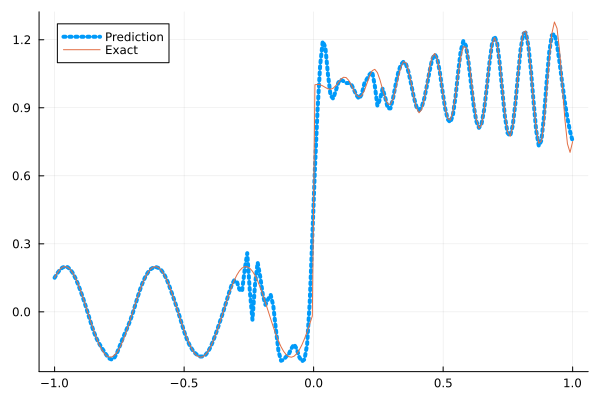
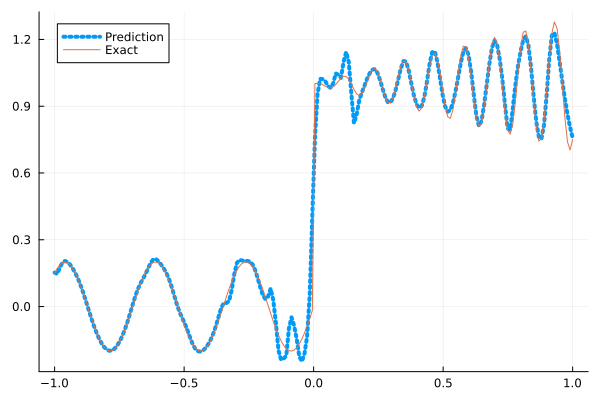

Fitting a nonlinear discontinuous function
This example is taken from here. However, we do not use adaptive activation functions. Instead, we show that using suitable non-parametric activation functions immediately performs better.
Consider the following discontinuous function with discontinuity at $x=0$:
\[u(x)= \begin{cases}0.2 \sin (18 x) & \text { if } x \leq 0 \\ 1+0.3 x \cos (54 x) & \text { otherwise }\end{cases}\]
The domain is $[-1,1]$. The number of training points used is 50.
Import pacakges
using Lux, Sophon
using NNlib, Optimisers, Plots, Random, StatsBase, ZygoteDataset
function u(x)
if x <= 0
return 0.2 * sin(18 * x)
else
return 1 + 0.3 * x * cos(54 * x)
end
end
function generate_data(n=50)
x = reshape(collect(range(-1.0f0, 1.0f0, n)), (1, n))
y = u.(x)
return (x, y)
endgenerate_data (generic function with 2 methods)Let's visualize the data.
x_train, y_train = generate_data(50)
x_test, y_test = generate_data(200)
Plots.plot(vec(x_test), vec(y_test),label=false)
Naive Neural Nets
First we demonstrate show naive fully connected neural nets could be really bad at fitting this function.
model = FullyConnected((1,50,50,50,50,1), relu)Chain(
layer_1 = Dense(1 => 50, relu), # 100 parameters
layer_2 = Dense(50 => 50, relu), # 2_550 parameters
layer_3 = Dense(50 => 50, relu), # 2_550 parameters
layer_4 = Dense(50 => 50, relu), # 2_550 parameters
layer_5 = Dense(50 => 1), # 51 parameters
) # Total: 7_801 parameters,
# plus 0 states, summarysize 80 bytes.Train the model
function train(model, x, y)
ps, st = Lux.setup(Random.default_rng(), model)
opt = Adam()
st_opt = Optimisers.setup(opt,ps)
function loss(model, ps, st, x, y)
y_pred, _ = model(x, ps, st)
mes = mean(abs2, y_pred .- y)
return mes
end
for i in 1:2000
gs = gradient(p->loss(model,p,st,x,y), ps)[1]
st_opt, ps = Optimisers.update(st_opt, ps, gs)
if i % 100 == 1 || i == 2000
println("Epoch $i || ", loss(model,ps,st,x,y))
end
end
return ps, st
endtrain (generic function with 1 method)Plot the result
@time ps, st = train(model, x_train, y_train)
y_pred = model(x_test,ps,st)[1]
Plots.plot(vec(x_test), vec(y_pred),label="Prediction",line = (:dot, 4))
Plots.plot!(vec(x_test), vec(y_test),label="Exact",legend=:topleft)Epoch 1 || 8.474042007967853
Epoch 101 || 0.018370513488979577
Epoch 201 || 0.015270024542330254
Epoch 301 || 0.014925548051907067
Epoch 401 || 0.014521453369443571
Epoch 501 || 0.01377726691365294
Epoch 601 || 0.013127590091133038
Epoch 701 || 0.012672508984351537
Epoch 801 || 0.012412373350392213
Epoch 901 || 0.012315720029697785
Epoch 1001 || 0.01221035648464385
Epoch 1101 || 0.012196518565948807
Epoch 1201 || 0.012145398171281734
Epoch 1301 || 0.012121243112233821
Epoch 1401 || 0.011747449924820718
Epoch 1501 || 0.011026699285055593
Epoch 1601 || 0.009948040750880256
Epoch 1701 || 0.00880349650480923
Epoch 1801 || 0.008314059606219145
Epoch 1901 || 0.0076116822840445715
Epoch 2000 || 0.00758852119821592
12.764724 seconds (13.19 M allocations: 1.486 GiB, 5.51% gc time, 89.84% compilation time)
Siren
We use four hidden layers with 50 neurons in each.
model = Siren(1,50,50,50,50,1; omega = 30f0)Chain(
layer_1 = Dense(1 => 50, sin), # 100 parameters
layer_2 = Dense(50 => 50, sin), # 2_550 parameters
layer_3 = Dense(50 => 50, sin), # 2_550 parameters
layer_4 = Dense(50 => 50, sin), # 2_550 parameters
layer_5 = Dense(50 => 1), # 51 parameters
) # Total: 7_801 parameters,
# plus 0 states, summarysize 88 bytes.@time ps, st = train(model, x_train, y_train)
y_pred = model(x_test,ps,st)[1]
Plots.plot(vec(x_test), vec(y_pred),label="Prediction",line = (:dot, 4))
Plots.plot!(vec(x_test), vec(y_test),label="Exact",legend=:topleft)Epoch 1 || 0.9593070176876537
Epoch 101 || 0.0005524933947244939
Epoch 201 || 3.097673774308301e-5
Epoch 301 || 1.892040248178739e-6
Epoch 401 || 1.1611647911739359e-7
Epoch 501 || 5.4564588194128876e-9
Epoch 601 || 1.9174866441939633e-10
Epoch 701 || 8.314896238161392e-12
Epoch 801 || 9.295142607924017e-13
Epoch 901 || 2.0270546804026357e-13
Epoch 1001 || 1.0917669990810346e-13
Epoch 1101 || 4.6444479871152897e-14
Epoch 1201 || 8.288213260936787e-14
Epoch 1301 || 7.505355297702808e-14
Epoch 1401 || 4.419593220772146e-14
Epoch 1501 || 6.244370498683124e-14
Epoch 1601 || 3.685218729662947e-14
Epoch 1701 || 4.51513280318225e-14
Epoch 1801 || 3.94355688091387e-14
Epoch 1901 || 5.682461954038335e-14
Epoch 2000 || 4.9962616659711846e-14
6.712044 seconds (8.16 M allocations: 1.298 GiB, 6.18% gc time, 80.38% compilation time)
As we can see the model overfits the data, and the high frequencies cannot be optimized away. We need to tunning the hyperparameter omega
model = Siren(1,50,50,50,50,1; omega = 10f0)Chain(
layer_1 = Dense(1 => 50, sin), # 100 parameters
layer_2 = Dense(50 => 50, sin), # 2_550 parameters
layer_3 = Dense(50 => 50, sin), # 2_550 parameters
layer_4 = Dense(50 => 50, sin), # 2_550 parameters
layer_5 = Dense(50 => 1), # 51 parameters
) # Total: 7_801 parameters,
# plus 0 states, summarysize 88 bytes.@time ps, st = train(model, x_train, y_train)
y_pred = model(x_test,ps,st)[1]
Plots.plot(vec(x_test), vec(y_pred),label="Prediction",line = (:dot, 4))
Plots.plot!(vec(x_test), vec(y_test),label="Exact",legend=:topleft)Epoch 1 || 0.4841168551192567
Epoch 101 || 0.00697841740067918
Epoch 201 || 0.005439410566408277
Epoch 301 || 0.004473309588054053
Epoch 401 || 0.0035308400863004207
Epoch 501 || 0.0027084731705206387
Epoch 601 || 0.002033383705158104
Epoch 701 || 0.0014764204142817467
Epoch 801 || 0.0009724808747523218
Epoch 901 || 0.0005065146345102658
Epoch 1001 || 0.00021309632285893473
Epoch 1101 || 0.0001127978627441771
Epoch 1201 || 8.447203071921759e-5
Epoch 1301 || 7.219932948092818e-5
Epoch 1401 || 6.428230811314491e-5
Epoch 1501 || 5.809621976786304e-5
Epoch 1601 || 5.2825771965823354e-5
Epoch 1701 || 5.563128450019621e-5
Epoch 1801 || 4.4173586088458715e-5
Epoch 1901 || 4.214209828247573e-5
Epoch 2000 || 3.72839506303124e-5
1.208316 seconds (1.15 M allocations: 892.428 MiB, 6.58% gc time)
Gaussian activation function
We can also try using a fully connected net with the gaussian activation function.
model = FullyConnected((1,50,50,50,50,1), gaussian)Chain(
layer_1 = Dense(1 => 50, gaussian), # 100 parameters
layer_2 = Dense(50 => 50, gaussian), # 2_550 parameters
layer_3 = Dense(50 => 50, gaussian), # 2_550 parameters
layer_4 = Dense(50 => 50, gaussian), # 2_550 parameters
layer_5 = Dense(50 => 1), # 51 parameters
) # Total: 7_801 parameters,
# plus 0 states, summarysize 80 bytes.@time ps, st = train(model, x_train, y_train)
y_pred = model(x_test,ps,st)[1]
Plots.plot(vec(x_test), vec(y_pred),label="Prediction",line = (:dot, 4))
Plots.plot!(vec(x_test), vec(y_test),label="Exact",legend=:topleft)Epoch 1 || 0.3135394541933489
Epoch 101 || 0.004755084569894435
Epoch 201 || 0.002794505247852791
Epoch 301 || 0.0008073223799569554
Epoch 401 || 1.1697365288156465e-5
Epoch 501 || 1.0172163190470514e-6
Epoch 601 || 1.881889932554179e-7
Epoch 701 || 1.9929933310192926e-5
Epoch 801 || 5.329476114243975e-6
Epoch 901 || 4.682592385084835e-10
Epoch 1001 || 3.526098958925502e-6
Epoch 1101 || 9.178884560284013e-11
Epoch 1201 || 0.00026840743956326634
Epoch 1301 || 3.297067240896032e-6
Epoch 1401 || 1.5831129361848864e-11
Epoch 1501 || 1.6757747558749964e-6
Epoch 1601 || 1.8191794593549091e-6
Epoch 1701 || 5.6427579513572225e-11
Epoch 1801 || 1.3882114361305776e-6
Epoch 1901 || 7.462818383860193e-5
Epoch 2000 || 2.101290359528842e-6
6.358241 seconds (7.29 M allocations: 1.251 GiB, 5.65% gc time, 76.52% compilation time)
Quadratic activation function
quadratic is much cheaper to compute compared to the Gaussain activation function.
model = FullyConnected((1,50,50,50,50,1), quadratic)Chain(
layer_1 = Dense(1 => 50, quadratic), # 100 parameters
layer_2 = Dense(50 => 50, quadratic), # 2_550 parameters
layer_3 = Dense(50 => 50, quadratic), # 2_550 parameters
layer_4 = Dense(50 => 50, quadratic), # 2_550 parameters
layer_5 = Dense(50 => 1), # 51 parameters
) # Total: 7_801 parameters,
# plus 0 states, summarysize 80 bytes.@time ps, st = train(model, x_train, y_train)
y_pred = model(x_test,ps,st)[1]
Plots.plot(vec(x_test), vec(y_pred),label="Prediction",line = (:dot, 4))
Plots.plot!(vec(x_test), vec(y_test),label="Exact",legend=:topleft)Epoch 1 || 0.29633267160015486
Epoch 101 || 0.006224973793111689
Epoch 201 || 0.005609613630047739
Epoch 301 || 0.005180230751538495
Epoch 401 || 0.004698616220005433
Epoch 501 || 0.004182873305611767
Epoch 601 || 0.003679982831681845
Epoch 701 || 0.0024279521634883
Epoch 801 || 0.0009477966860827786
Epoch 901 || 7.288505990296665e-5
Epoch 1001 || 3.0408962240360296e-6
Epoch 1101 || 9.84428112598248e-8
Epoch 1201 || 3.191170800378673e-7
Epoch 1301 || 1.858989841502929e-8
Epoch 1401 || 1.1404293522105523e-5
Epoch 1501 || 1.7708372083827695e-9
Epoch 1601 || 4.905215580678309e-6
Epoch 1701 || 0.00017455397326564322
Epoch 1801 || 1.6603702094442802e-8
Epoch 1901 || 3.7561077391996564e-6
Epoch 2000 || 1.6530326793422922e-5
5.624588 seconds (7.04 M allocations: 1.235 GiB, 6.27% gc time, 82.25% compilation time)
Conclusion
"Neural networks suppresse high frequency components" is a misinterpretation of the spectral bias. The accurate way of putting it is that the lower frequencies in the error are optimized first in the optimization process. This can be seen in Siren's example of overfitting data, where you do not have implicit regularization. The high frequency in the network will never go away because it has fitted the data perfectly.
Mainstream attributes the phenomenon that neural networks "suppress" high frequencies to gradient descent. This is not the whole picture. Initialization also plays an important role. Siren mitigats this problem by initializing larger weights in the first layer, while activation functions such as gassian have large enough gradients and sufficiently large support of the second derivative with proper hyperparameters. Please refer to Vincent Sitzmann, Julien Martel, Alexander Bergman, David Lindell, Gordon Wetzstein (2020), Sameera Ramasinghe, Simon Lucey (2021) and Sameera Ramasinghe, Lachlan MacDonald, Simon Lucey (2022) if you want to dive deeper into this.